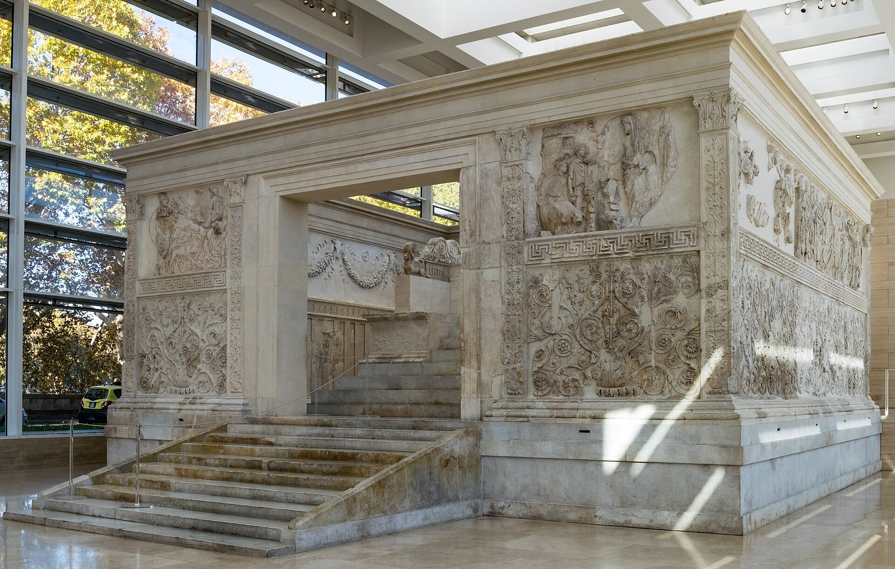
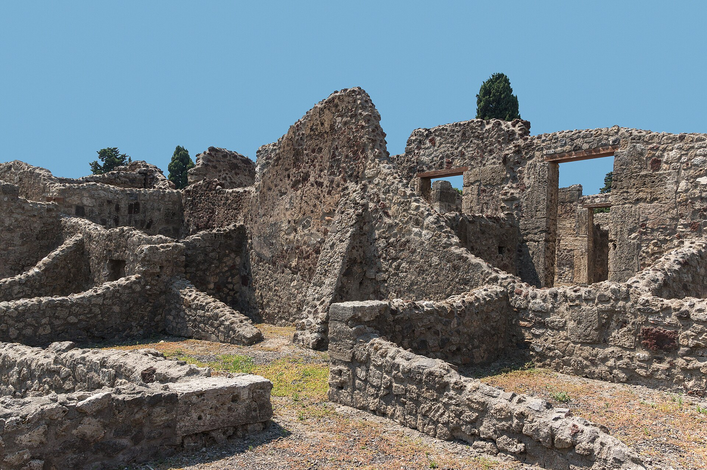

Überblick
Frühe Kaiserzeit bezeichnet im Überblick der Timeline Römisches Reich die Phase vom Prinzipat des Augustus (27 v. Chr.) über die julisch-claudische und flavische Dynastie bis zur Hochkaiserzeit der Adoptiv- und Antoninenkaiser (etwa bis 180 n. Chr., mit weichem Ausklang bis zu den Severern um 193–235). Der vorangehende Block Mittlere und späte Republik endet mit Actium und der Alleinherrschaft Octavians; hier wird aus der Machtkonzentration eine dauerhafte Ordnung: der princeps als Erster Bürger mit republikanischer Fassade, faktisch aber mit Kontrolle über Heer, Finanzen und Provinzen.
Militärisch und außenpolitisch prägen relative innere Stabilität, Frontierkriege und die Konsolidierung der Grenzen (Rhein, Donau, Orient, Britannien) die Epoche; wirtschaftlich und kulturell die sogenannte Pax Romana, Urbanisierung und eine literarische Blüte unter Augustus und in der Hochkaiserzeit. Politisch bleibt die Nachfolge das strukturelle Problem: Adoption, Dynastie und Heeresakklamation ersetzen eine klare Verfassungsregel. Die Krise des 3. Jahrhunderts und die Spätantike behandelt der folgende Block Krise des 3. Jahrhunderts und Spätantike.
Die Quellenlage ist reich, aber parteilich: Augustus’ Res gestae, Tacitus, Sueton, Cassius Dio, Plinius der Jüngere, Inschriften und Archäologie. Hofgeschichten über „gute“ und „schlechte“ Kaiser und Idealbilder einer Adoptivmonarchie sind kritisch zu lesen; Bevölkerungs- und Verlustzahlen bleiben oft unsicher.
Akteure
- Augustus (Gaius Octavius / Octavian) (63 v. Chr.–14 n. Chr.): Begründer des Prinzipats; princeps ab 27 v. Chr.; Ordner von Heer, Finanzen und dynastischer Nachfolge.
- Marcus Vipsanius Agrippa (um 63–12 v. Chr.): Feldherr und Bauherr; Sieger von Actium; zentral für Augustus’ Herrschaftspraxis.
- Livia Drusilla (58 v. Chr.–29 n. Chr.): Ehefrau des Augustus; einflussreiche Dynastiefigur; Mutter des Tiberius.
- Tiberius (42 v. Chr.–37 n. Chr.): zweiter Princeps; Adoptivsohn des Augustus; Regierungsstil durch Senatsspannungen und Sejan geprägt.
- Caligula (Gaius) (12–41): julisch-claudischer Kaiser; kurze, konfliktreiche Herrschaft; ermordet.
- Claudius (10 v. Chr.–54 n. Chr.): Ausbau der Verwaltung und der Provinzen; Eroberung Britanniens ab 43.
- Nero (37–68): letzter Julio-Claudier; Kulturpolitik und Krisen (Brand Roms, Christenverfolgung 64, jüdischer Aufstand); Selbstmord 68.
- Vespasian (9–79): Begründer der Flavier; Sieger des Vierkaiserjahres 69; Fiskal- und Baupolitik (u. a. Kolosseum).
- Titus (39–81) und Domitian (51–96): flavische Nachfolger; Titus mit Vesuvausbruch 79 verbunden; Domitian autokratischer, 96 ermordet.
- Nerva, Trajan, Hadrian (reg. 96–138): Übergang von den Flaviern zur Adoptivfolge; Trajan Expansion (Dakien, Orient), Hadrian Grenz- und Verwaltungsfestigung.
- Antoninus Pius und Marcus Aurelius (reg. 138–180): Hochkaiserzeit; Marcus mit Markomannenkriegen und Mitkaisertum des Lucius Verus; philosophische Schrift Selbstbetrachtungen.
- Commodus (161–192): Sohn des Marcus; Ende der Adoptividealreihe; 192 ermordet; Bürgerkrieg folgt.
- Septimius Severus (um 145–211): Dynastiegründer der Severer; Brücke zur Soldatenkaiserkrise; Heer und Dynastie betont.
- Senat, Ritterstand (equites), Provinzialeliten und Legionen: Träger von Verwaltung, Städtewesen und Machtakklamation.
- Literaten und Gelehrte: Vergil, Horaz, Ovid, Livius; später Tacitus, Plinius, Sueton; im Osten griechische Rhetorik und Sophistik.
Was geschah
Augustus und der Prinzipat

Nach Actium (31) und der Einnahme Ägyptens (30) stand Octavian ohne Rivalen. 27 v. Chr. legte er formell außerordentliche Vollmachten nieder und erhielt vom Senat den Ehrennamen Augustus sowie ein Provinzkommando über die militärisch zentralen Gebiete; 23 erhielt er dauerhaft die tribunizische Gewalt (tribunicia potestas) und ein übergeordnetes imperium. Das Regime heißt Prinzipat, weil er als princeps („Erster“) an der Spitze äußerlich wiederbelebter republikanischer Institutionen stand. Faktisch kontrollierte er Heer, Getreideversorgung, Außenpolitik und einen wachsenden Amtsapparat aus Rittern und Freigelassenen.
Augustus professionalisierte die Legionen, setzte Veteranenversorgung und Grenzpolitik fort, reformierte Finanzen und Moralgesetze und ließ Rom monumental umbauen („Stadt aus Marmor“ ist Propaganda, der Bauboom archäologisch greifbar). Die Pax Augusta bzw. Pax Romana meinte relative innere Ruhe nach den Bürgerkriegen, nicht Kriegsfreiheit an allen Grenzen: in Germanien und Illyricum blieb es unruhig; die Varusschlacht 9 n. Chr. stoppte die Elbexpansion. Dynastisch scheiterten mehrere Erben (Marcellus, Gaius und Lucius Caesar, Drusus); schließlich adoptierte Augustus Tiberius. Die Res gestae Divi Augusti stilisieren Restauration und Wohltaten; moderne Forschung sieht eher eine personalisierte Autokratie hinter republikanischer Rhetorik.
Julio-Claudier und Flavier

Tiberius (14–37) sicherte die Nachfolge und führte die Verwaltung weiter, zog sich aber zunehmend nach Capri zurück; die Macht des Prätorianerpräfekten Sejan und Senatsprozesse überschatten das Bild bei Tacitus. Caligula (37–41) endete nach kurzer Herrschaft durch Ermordung. Claudius (41–54) stützte sich auf Freigelassene und Ritter in der Zentralverwaltung, erweiterte das Bürgerrecht und eröffnete die Eroberung Britanniens (43). Nero (54–68) begann unter dem Einfluss Senecas und Burrus’ relativ geordnet; später prägten Hofkonflikte, der Brand Roms 64, die Verfolgung einer christlichen Minderheit und der jüdische Aufstand ab 66 die Wahrnehmung. 68 erhob sich Galba; Nero nahm sich das Leben: das julisch-claudische Haus erlosch.
Das Vierkaiserjahr 69 (Galba, Otho, Vitellius, Vespasian) zeigte, dass Kaiser außerhalb Roms von Legionen ausgerufen werden konnten. Vespasian (69–79) konsolidierte Finanzen, disziplinierte das Heer und begann den Bau des Flavischen Amphitheaters (Kolosseum); der jüdische Krieg endete 70 mit der Zerstörung des Tempels in Jerusalem unter Titus. Titus’ kurze Regierung (79–81) fiel mit dem Vesuvausbruch zusammen, der Pompeji und Herculaneum zerstörte. Domitian (81–96) stärkte die Grenzverteidigung und die kaiserliche Selbstinszenierung, geriet in Konflikt mit dem Senat und wurde 96 ermordet; seine damnatio memoriae färbt die literarische Überlieferung. Die lex de imperio Vespasiani und flavische Praxis machten das Kaisertum rechtlich und politisch greifbarer als unter Augustus’ persönlicher auctoritas.
Adoptivkaiser und Hochkaiserzeit
Nerva (96–98) wurde vom Senat erhoben und adoptierte Trajan, den Statthalter Obergermaniens: Militär und Senat sollten versöhnt werden. Trajan (98–117) führte erfolgreiche Kriege in Dakien (101–102, 105–106) und temporär tief in den Osten (Partherkrieg); das Reich erreichte unter ihm seine größte Ausdehnung. Forum, Märkte und die Trajanssäule visualisierten Sieg und Fürsorge. Hadrian (117–138) gab überdehnte Eroberungen auf, bereiste die Provinzen, festigte Grenzen (Hadrianswall in Britannien) und baute Verwaltung und Rechtspflege aus. Die Vorstellung einer rein „meritokratischen“ Adoptivfolge ist modern überhöht: Adoption diente dynastischer Planung, wo leibliche Erben fehlten oder riskant schienen.
Antoninus Pius (138–161) gilt als Phase relativer Ruhe und städtischer Prosperität. Marcus Aurelius (161–180) regierte zunächst mit Lucius Verus; Markomannenkriege an der Donau und eine schwere Seuche (oft „Antoninische Pest“ genannt; Erreger unsicher) belasteten Ressourcen und Demografie. Mit Commodus (180–192) folgte erstmals dauerhaft ein leiblicher Sohn eines amtierenden Kaisers; seine Herrschaft und Ermordung 192 leiteten Bürgerkrieg ein. Septimius Severus (193–211) siegte, stützte sich auf das Heer und gründete die Severerdynastie: ein Übergang, der bereits Soldatenbindung und Dynastiebetonung der späteren Krise vorwegnimmt, ohne dass hier die volle Krise des 3. Jahrhunderts entfaltet wird.
Reich, Städte und Alltag

Das Kaiserreich war ein Städtebund unter militärischer Hegemonie: Munizipien und Kolonien in West und Ost organisierten Steuern, Kulte und lokale Eliten. Straßen, Häfen, Aquädukte und Getreideflotten (bes. aus Ägypten und Africa) sicherten Versorgung und Truppenbewegung. Romanisierung und Hellenisierung liefen parallel: Latein im Westen, Griechisch im Osten als Leitsprachen der Elite; lokales Recht und lokale Götter blieben oft bestehen, eingebunden in Kaiserkult und öffentliche Religion.
Sozial gliederte sich die Gesellschaft in Senatoren, Ritter, Dekurionen der Städte, Freie unteren Ranges, Freigelassene und Sklaven. Bürgerrecht breitete sich aus (Höhepunkt später 212 mit der Constitutio Antoniniana unter Caracalla, bereits jenseits der Kernphase dieses Blocks). Alltagsleben ist archäologisch greifbar in Pompeji/Herculaneum, in Inschriften, Grabdenkmälern und Provinzstädten von Trier bis Ephesos. Christen blieben lange eine kleine, gelegentlich lokal verfolgte Minderheit; systematische Reichspolitik gegen sie gehört vor allem in spätere Jahrhunderte. Frauen der Elite wirkten über Familie, Patronage und Kult; rechtlich blieben sie unter Vormundschaftstraditionen, faktisch oft geschäftlich und sozial aktiv.
Grenzen, Legionen und Kultur
Die Armee (rund 25–30 Legionen plus Hilfstruppen; genaue Stärken schwanken in den Quellen) sicherte Rhein, Donau, Orient und Nordafrika. Limes-Anlagen, Kastelle und Straßen markierten kontrollierte Zonen mehr als undurchdringliche Mauern; Diplomatie, Klientelkönige und Strafexpeditionen ergänzten Präsenz. Prätorianergarde und Flotten waren Machtinstrumente in Italien und im Mittelmeer. Veteranenkolonien und Soldatenkarrieren banden Provinzialen an Rom.
Kulturell prägte die augusteische Klassik (Vergil, Horaz, Properz, Ovid; Livius’ Geschichtswerk) das lateinische Selbstbild; Rhetorik, Recht und griechische Bildung formten die Reichselite. In der Hochkaiserzeit schrieben Tacitus und Sueton über Kaiser und Sitten, Plinius über Verwaltung und Alltag; im Osten blühten Zweite Sophistik und Städtebau. Architektur und Technik (Pantheon in hadrianischer Form, Thermen, Amphitheater) und der Kaiserkult visualisierten Ordnung. Literatur und Senatsgeschichtsschreibung stilisierten oft Tyrannen und Tugendkaiser; archäologische und epigraphische Befunde korrigieren und ergänzen dieses Bild.
Beginn
Als Beginn dieses Blocks gilt die Neuordnung von 27 v. Chr.: Octavian wird Augustus, der Prinzipat nimmt institutionelle Gestalt an. Historisch eng damit verbunden sind Actium (31) und die Kontrolle Ägyptens (30), behandelt am Ende der Mittleren und späten Republik. Für die Timeline des Römischen Reiches markiert 27 den Übergang von Bürgerkriegsdominanz zu stabilisierter Alleinherrschaft unter republikanischen Formen.
Ende
Das Ende liegt weich zwischen dem Tod des Marcus Aurelius (180), dem Scheitern Commodus’ (192) und dem severischen Intermezzo bis etwa 235 (Ende Severus Alexander): die Hochblüte der Adoptiv- und Antoninenzeit ist vorbei, Soldatenkaisertum und Reichskrise kündigen sich an. Die eigentliche Krise des 3. Jahrhunderts und Spätantike (ab den 230er Jahren mit Einfallen, Usurpationen und wirtschaftlichem Druck) gehört zum folgenden Block. Offen und umstritten bleiben unter anderem die Tiefe der „republikanischen“ Fassade, die Deutung der Adoptivfolge als Ideal, das Ausmaß der Pax Romana in den Provinzen und die demographische Wirkung der Seuchen. Sicher ist: Der Prinzipat verwandelte ein erobertes Mittelmeerreich in eine dauerhafte Monarchie mit städtischer Infrastruktur und professionellem Heer.
Quellen
- Encyclopaedia Britannica – „Augustus“: https://www.britannica.com/biography/Augustus-Roman-emperor
- Encyclopaedia Britannica – „principate“: https://www.britannica.com/topic/principate
- Encyclopaedia Britannica – „ancient Rome“ (Empire): https://www.britannica.com/place/ancient-Rome
- Encyclopaedia Britannica – „Pax Romana“: https://www.britannica.com/event/Pax-Romana
- Encyclopaedia Britannica – „Tiberius“: https://www.britannica.com/biography/Tiberius
- Encyclopaedia Britannica – „Nero“: https://www.britannica.com/biography/Nero-Roman-emperor
- Encyclopaedia Britannica – „Vespasian“: https://www.britannica.com/biography/Vespasian
- Encyclopaedia Britannica – „Year of the Four Emperors“: https://www.britannica.com/topic/Year-of-the-Four-Emperors
- Encyclopaedia Britannica – „Trajan“: https://www.britannica.com/biography/Trajan
- Encyclopaedia Britannica – „Hadrian“: https://www.britannica.com/biography/Hadrian
- Encyclopaedia Britannica – „Five Good Emperors“: https://www.britannica.com/topic/Five-Good-Emperors
- Encyclopaedia Britannica – „Marcus Aurelius“: https://www.britannica.com/biography/Marcus-Aurelius-Roman-emperor
- Encyclopaedia Britannica – „Antonine Wall“ / frontiers context: https://www.britannica.com/topic/Antonine-Wall
- Livius.org – Augustus: https://www.livius.org/articles/person/augustus/
- Livius.org – Res Gestae Divi Augusti: https://www.livius.org/sources/content/augustus-rgda/
- Livius.org – Vespasian: https://www.livius.org/articles/person/vespasian/
- Livius.org – Trajan: https://www.livius.org/articles/person/trajan/
- World History Encyclopedia – „Roman Empire“: https://www.worldhistory.org/Roman_Empire/
- World History Encyclopedia – „Augustus“: https://www.worldhistory.org/augustus/
- World History Encyclopedia – „Pax Romana“: https://www.worldhistory.org/Pax_Romana/
- World History Encyclopedia – „Year of the Four Emperors“: https://www.worldhistory.org/Year_of_the_Four_Emperors/
- World History Encyclopedia – „Hadrian“: https://www.worldhistory.org/Hadrian/
- Perseus Digital Library – Tacitus, Annals (Zugang): https://www.perseus.tufts.edu/hopper/text?doc=Perseus:text:1999.02.0078
- LacusCurtius – Cassius Dio, Roman History: https://penelope.uchicago.edu/Thayer/E/Roman/Texts/Cassius_Dio/home.html
- British Museum – Learn: Ancient Rome: https://www.britishmuseum.org/learn/schools/ages-7-11/ancient-rome
- Met Museum – Heilbrunn Timeline: Roman Empire: https://www.metmuseum.org/toah/hd/roem/hd_roem.htm
- UNESCO – Hadrian’s Wall (Frontiers of the Roman Empire): https://whc.unesco.org/en/list/430/